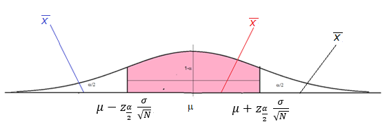
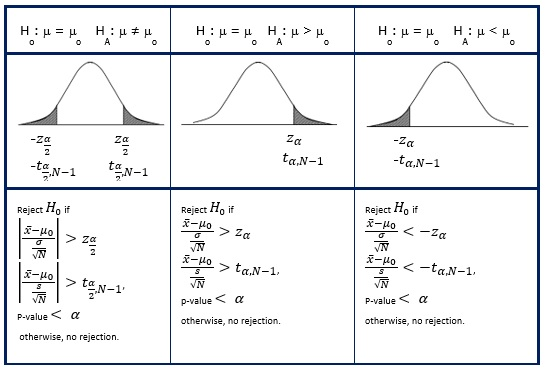
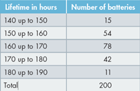
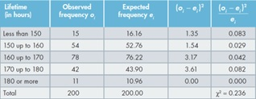
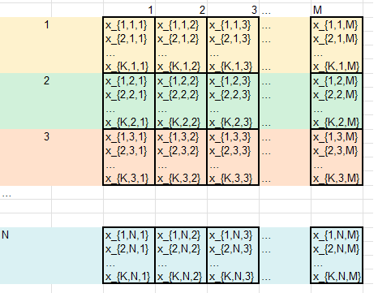

Lecture 10 Statistical Testing
Concepts:
Standard procedure of a statistical test, null hypothesis, significance level, alternative hypothesis, error type I and type II, critical value and p valueNull hypothesis, alternative hypothesis, significance level, test statistic and critical values
10.1 Test as searching for indication of updating the population knowledge
From previous chapter we know that \(\overline{X}\) is normally distributed with mean \(\mu\) and standard deviation \(\frac{\sigma}{\sqrt{N}}\). Newly collected data gives \(\overline{x}\) as one realisation of \(\overline{X}\) may lie in three different location as shown in the following graph:

If \(\overline{x}\) lies within the confidence interval like the red \(\bar{x}\), we would say this happens as expected. Statisticians have a rule events that took place with large probability.
If \(\bar{x}\) lies outside the confidence interval like either the blue \(\bar{x}\) or the black \(\bar{x}\), a statistician would not say we observe a rarer event, rather sticking to the belief that what observe was event with large probability, he would conclude the value of \(\mu\) has changes. If we observe the blue \(\bar{x}\) his conclusion would be \(\mu\) has decreased, while for the case of black \(\bar{x}\), \(\mu\) has increased.
So, depending of the value of the new information of \(\bar{x}\) we will conclude either there is not evidence of changes in \(\mu\), there is evidence of changes in \(\mu\), there is evidence that \(\mu\) has increased or there is evidence that \(\mu\) has decreased.
Now we can formalise the above arguments.
\(\bar{x}\) lies outside the confidence interval is formally \(\left|\bar{x}-\mu \right| > z_{\frac{\alpha}{2}}\frac{\sigma}{\sqrt{N}}\) or equivalently: (dividing both sides by \(\frac{\sigma}{\sqrt{N}}\))
\[\left| \frac{\mu - \bar{x}}{\frac{\sigma}{\sqrt{N}}} \right| > z_{\frac{\alpha}{2}}\]
The left-hand side of the formula above is called test statistic, the right-hand side is called critical value, which is to be found in the normal table. If the test statistic is absolutely larger than the critical value, we will conclude that the population parameter \(\mu\) has changed and we need to update out knowledge about the population.
10.2 Formal procedure of a statistical test
Step 1: formulate hypotheses
Step 2: choose the significance level \(\alpha\) and find the critical value
Step 3: calculate the test statistic or p-value
Step 4: compare the test statistic with the critical value or p-value with the significance level and draw conclusions.
Example 1
Researchers believe that the mean size of land erosion has increased since 2000 from a mean of 350 hectares. To test this, a random sample of 25 pieces of land was selected. The sample had a mean land size of 370.55 hectares and a standard deviation of 35.55. Use a significance level of 0.05 to test this hypothesis.
Step 1: formulate hypotheses:
\(H_0\) : \(\mu = 350\)
\(H_a\): \(\mu \ne 350\)
Step 2: choose the significance level and find the critical value \(\alpha = 0.05\), Because \(\sigma\) is not given, \(t\) distribution is used: \(t_{\frac{\alpha}{2},N - 1}=2.06\)
Step 3: calculate the test statistic
\(\left| \frac{\mu - \overline{X}}{\frac{\sigma}{\sqrt{N}}} \right|= \left| \frac{350 - 370.55}{\frac{35.55}{\sqrt{25}}} \right|=2.89\)
Step 4: compare the test statistic with the critical value and draw conclusions
Whenever the test statistic is absolutely larger than the critical value, we will reject the null hypothesis. Otherwise no rejection.
\(2.89 > 2.06 \to\) Rejection of the Null hypothesis.
- Conclusion: We have significant evidence against the null hypothesis*
10.3 Tests of population means (proportion)
The formal procedure to conduct a statistical test on the population mean consists of the following three steps:
- Formulate the hypotheses
We always put we want to know as the alternative hypothesis:
want to know the mean has changed: \(H_{1}:\ \mu \neq \mu_{0}\), two tails test
want to know the mean has increased: \(H_{1}:\ \mu > \mu_{0}\), one tail test
want to know the mean has decreased: \(H_{1}:\ \mu < \mu_{0}\). One tail test
We always put our previous knowledge as null hypothesis \(H_{0}:\ \mu = \mu_{0}\) and
Calculate the test statistic, the standardised sample average \(\frac{\overline{x} - \mu_{0}}{SD(\overline{x})}\) under \(H_{0}\).
Choose the significance level and determine the critical value and rejection region.
Usually \(\alpha\)=5%, in some cases \(\alpha\)=1% or \(\alpha\)=10%
The critical value is \(z_{\frac{\alpha}{2}}\), \(z_{\alpha}\), or -\(z_{\alpha}\) correspond to the alternative hypotheses. 
When do we use t – distribution/table?
Whenever we estimate \(SD(\overline{x})\) by \(\frac{s}{\sqrt{N}}\) and \(N < 50\).
Test of population proportion SD(\(\overline{x}\))=\(\sqrt{\frac{p(1 - p)}{N}}\)
- Draw the conclusion: we reject \(H_{0}\) if the test statistic is
larger than the positive critical value, or
smaller than the negative critical value.
\(p\)-value < \(\alpha\) reject the null hypothesis.
10.4 Compare two population means
Test of identical population means based on two sets of sample data** are closely related to the above t test.
\(H_{0}:\ \mu_{X} = \mu_{Y}\) v.s. \(H_{1}:\ \mu_{X} \neq \mu_{Y}\)
The test statistics is the standardised difference in sample averages:
\(\left| \frac{\overline{x} - \overline{y} - (\mu_{X} - \mu_{Y})}{s\sqrt{\frac{1}{N_{x}} + \frac{1}{N_{y}}}} \right|\) with \(s^{2} = \frac{{(N_{x} - 1)s}_{x}^{2} + (N_{y} - 1)s_{y}^{2}}{\left( N_{x} - 1 \right) + (N_{y} - 1)}\)
Reject the Null hypothesis if \(\left| \frac{\overline{x} - \overline{y} - (\mu_{X} - \mu_{Y})}{s\sqrt{\frac{1}{N_{x}} + \frac{1}{N_{y}}}} \right| > t_{\frac{\alpha}{2},N_{x} + N_{y} - 2}\).
This test can be easily extended to the case of testing difference in population means. In fact, the test statistics is given in the difference in population means. For identical means \(\mu_{X} - \mu_{Y} = 0\).
Test Statistic and P-value
In the following interactive diagram you can input the population parameters and sample sizes to investigate the relationship between sample size, population parameters, test statistic and p-value.
## Warning: `includeHTML()` was provided a `path` that appears to be a complete HTML document.
## ✖ Path: pvalueandteststatistic.html
## ℹ Use `tags$iframe()` to include an HTML document. You can either ensure `path` is accessible in your app or document (see e.g. `shiny::addResourcePath()`) and pass the relative path to the `src` argument. Or you can read the contents of `path` and pass the contents to `srcdoc`.Enter Population Parameters
10.5 From t-test to \(\chi^2\) test
We know that the test statistic of sample proportion \(\frac{\widehat{p} - p}{\sqrt{\frac{p(1 - p)}{N}}}\) is standard normal and we can use the standard normal distribution to test if the population proportion has changed. The square of the test statistic \(({\frac{\widehat{p} - p}{\sqrt{\frac{p(1 - p)}{N}}})}^{2}\) is also a random variable that has a so-called Chi-square distribution. We can also use the Chi square table to test if the population proportion has changed. In doing so the test statistic has a new look:
\(\left( \frac{N}{N}\frac{\widehat{p} - p}{\sqrt{\frac{p(1 - p)}{N}}} \right)^{2} = \left( \frac{\widehat{p}N - pN}{\sqrt{Np(1 - p)}} \right)^{2} = \frac{\left( O_{1}{- E}_{1} \right)^{2}}{Np(1 - p)} = \frac{\left( O_{1}{- E}_{1} \right)^{2}(1 - p + p)}{Np(1 - p)} = \frac{\left( O_{1}{- E}_{1} \right)^{2}}{E_{1}} + \frac{\left( O_{2}{- E}_{2} \right)^{2}}{E_{2}}\sim ꭕ^{2}\)
We can interpret the test statistic as the sum of the squared difference between the sample frequency and the expected frequency:
\(O_{1} = \widehat{p}N\) is the observed frequency of “ones” and
\(E_{1} = pN\) is the expected frequency.
\(O_{2} = (1 - \widehat{p})N\) is the observed frequency of “zeros”.
\(E_{2} = (1 - p)N\) is the expected frequency of “zeros”.
If \(\left( O_{1}{- E}_{1} \right)^{2}\) is large, this is an indication that the population proportion has changed. But \(\left( O_{1}{- E}_{1} \right)^{2}\) depends on the sample size N. Large N will increase \(\left( O_{1}{- E}_{1} \right)^{2}\). Therefore, we use the ratio \(\frac{\left( O_{1}{- E}_{1} \right)^{2}}{E_{1}}\) that is independent of N.
Developing the test statistic of normalized squared difference between the expected frequencies and the observed frequencies is not only to provide an alternative test of the population proportion, but to use this test for much more other applications.
10.6 Test of multinomial proportions**
A multinomial random variable is a RV that can assume more than two nominal values. In the example of rolling a dice we have 6 values. If MIT offers 3 different degree programs, the choice of an MIT student will have 3 nominal values. The chi square test can be used to test if the population proportions in a multinomial distribution have changes.
Example 6
Two competing companies A and B (Coles and Woolworth) have conducted aggressive advertising campaigns. Market shares before the campaigns were:
Company A = 45%; Company B = 40%; Others = 15%.
To study the effects of the campaigns on the market shares, 200 customers were asked to indicate their preference regarding the product advertised. Among those surveyed, 102 customers preferred Company A’s product, 82 customers preferred Company B’s product, 16 customers preferred the other competitors’ products. Is there sufficient evidence to infer that the proportions have changed since the advertising campaigns were implemented.
Here we want to know if the proportion has changed, so the alternative hypothesis is at least on proportion has changes.
\(H_{0}\) the population proportion is \(p_{1,}\ldots p_{k}\) , \(H_{1}\) at least one of the proportions has changed.
We have the observed frequency now we can calculate the expected frequency \(E_{i} = Np_{i}\). We have
\(E_{1} = 200 \times 0.45 = 90\), \(E_{2} = 200 \times 0.40 = 80\), \(E_{3} = 200 \times 0.15 = 30\).
\[\sum_{i = 1}^{3}\frac{\left( E_{i} - O_{i} \right)^{2}}{E_{i}} = \frac{(90 - 102)^{2}}{90} + \frac{(82 - 80)^{2}}{80} + \frac{(30 - 16)^{2}}{30} = 8.18 > {ꭕ^{2}}_{0.05,2} = 5.99\]
We reject the null hypothesis. Implying there is strong evidence that at least one of the proportions has changed.
10.7 Test of independence
We know the left table reflects independence between two variables. Now the right table differs slightly from the left one. Is this difference large enough for us to conclude that these variables dependent? or is the difference only due to randomness of the realization such that we cannot say it is dependent?
Similar to the t-test approach we use a normalized statistic to describe the difference:
\(\sum_{i}^{M}{\sum_{j}^{N}\frac{(E_{\text{ij}}{{- O}_{\text{ij}})}^{2}}{E_{\text{ij}}}}\) where \(O_{\text{ij}}\) is the observed frequency in cell (i,j) and \(E_{\text{ij}}\) is the expected frequency in cell (i,j) that can be calculated through the marginal frequency of row I and column j. M the total number of rows and N is the total number of columns.
10.8 Test of normality
XM14-05 A battery manufacturer wishes to determine whether the lifetimes of its batteries are normally distributed. Such information would be helpful in establishing the guarantee that should be offered. The lifetimes of a sample of 200 batteries are measured, and the resulting data are grouped into a frequency distribution, as shown in the following table. The mean and the standard deviation of the sample of lifetimes are calculated to be \(\overline{X}\) = 164 and s = 10. Can the manufacturer infer that lifetimes of batteries are normally distributed?
We can calculate the expected frequencies through multiplying the probability for each group with the sample size.
\[E_{(160 - 170)} = P \times N = 0.3811 \times 200 = 76.22\]
In the same way we can calculate the expected frequency for each group

\[0.236 < {ꭕ^{2}}_{0.05,4} = 7.77\]
There is no significant evidence to reject the null hypothesis.
10.9 ANOVA
10.9.1 One-way ANOVA
Two sample \(t\)-test can be applied to compare means in two different groups. If we need to compare means aover more than two groups we can use one-way ANOVA (analysis of variance) test.
If we have \(M\) groups of data, each group has \(N_j\) data points respectively:
Group 1: \(x_{11}\), \(x_{12}\),\(x_{13}\),…,\(x_{1,N_1}\) \(\rightarrow\) \(\bar{x}_1 =\frac{1}{N_1}\sum_{j=1}^{N_1}x_{1,j}\),
Group 2: \(x_{21}\), \(x_{22}\),\(x_{22}\),…,\(x_{1,N_1}\) \(\rightarrow\) \(\bar{x}_2 =\frac{1}{N_2}\sum_{j=1}^{N_2}x_{2,j}\)
\(\vdots\)
Group M: \(x_{M1}\), \(x_{M2}\),\(x_{12}\),…,\(x_{1,N_M}\) \(\rightarrow\) \(\bar{x}_N =\frac{1}{N_M}\sum_{j=1}^{N_M}x_{M,j}\)
The grand average \(\bar{x} = \frac{\sum_{j=1}^{M}\sum_{i=1}^{M_j}x_{ij}}{\sum_{J=1}^MN_j}\)
\(SSB = \sum{N_j(\bar{x}_j-\bar{x})^2}\)
\(SSW = \sum_{j=1}^{M}\sum_{i=1}^{N_j}{(\bar{x}_{ij}-\bar{x}_j)^2}\)
\[F = \frac{\frac{SSB}{M-1}}{\frac{SSW}{N-M}}\]
Under the null assumption that the mean in each group are equal, the ratio has an \(F\) distribution, which can be used to test the null hypothesis.If At least the mean of any one group is not equal to others, the SSB will be larger and this canbe used as evidence agaist thenull hypothesis.
Now we have the formal procedure for one way ANOVA:
\(H_0: \mu_1 = \mu_2 = ...= \mu_M\) \(H_a: \mu_i\ne \mu_j\) for at least one pair \(i,j\).
Test statistic: \(F = \frac{SSB/(M-1)}{SSW/(N-M)}\)
For \(F > F_{1-\alpha,N-m,M-1}\) \(H_0\) will be rejected.
10.9.2 Two-way ANOVA
In one-way ANOVA we investigate the relationship between one numerical one categorical variables, where the categorical variable with \(M\) different values separates the numerical variables into \(M\) different groups according to its value; and we want to know whether the means in these \(M\) groups are the same. In two-way ANOVA we investigate the relationship between one numerical variable and two categorical variables with \(M\) and \(N\) different values respectively, where the two categorical variables separate the numerical variable into \(M\times N\) groups, organized in \(M\) columns and \(N\) blocks of rows. We want to know whether the mean of each column is the same, whether the mean of each block is the same, and whether the interaction between the two categorical variables make a difference. Often the categorical variables can use to describe some treatment. Therefore these tests ae often used to identify the effect of treatments.
Assuming our data are organised in \(M\times N\) groups each group contains \(K\) data. Each group is called a cell.

We
The grand average \(\bar{x} = \frac{\sum_{j=1}^{M}\sum_{i=1}^{M_j}x_{ij}}{\sum_{J=1}^MN_j}\)
\(SSB = \sum{N_j(\bar{x}_j-\bar{x})^2}\)
\(SSW = \sum_{j=1}^{M}\sum_{i=1}^{N_j}{(\bar{x}_{ij}-\bar{x}_j)^2}\)
\[F = \frac{\frac{SSB}{M-1}}{\frac{SSW}{N-M}}\]
Under the null assumption that the mean in each group are equal, the ratio has an \(F\) distribution, which can be used to test the null hypothesis.If At least the mean of any one group is not equal to others, the SSB will be larger and this canbe used as evidence agaist thenull hypothesis.
Now we have the formal procedure for one way ANOVA:
\(H_0: \mu_1 = \mu_2 = ...= \mu_M\) \(H_a: \mu_i\ne \mu_j\) for at least one pair \(i,j\).
Test statistic: \(F = \frac{SSB/(M-1)}{SSW/(N-M)}\)
For \(F > F_{1-\alpha,N-m,M-1}\) \(H_0\) will be rejected
Review questions
What is the purpose of a statistical testing?
How should we formulate the alternative hypothesis and he null hypothesis?
What is the main difference between the null hypothesis and the alternative hypothesis?
Is the significant level always chosen to be so small such as 5% or 1%?
If we do not reject the null hypothesis, can we conclude that we find evidence that supports the null hypothesis?